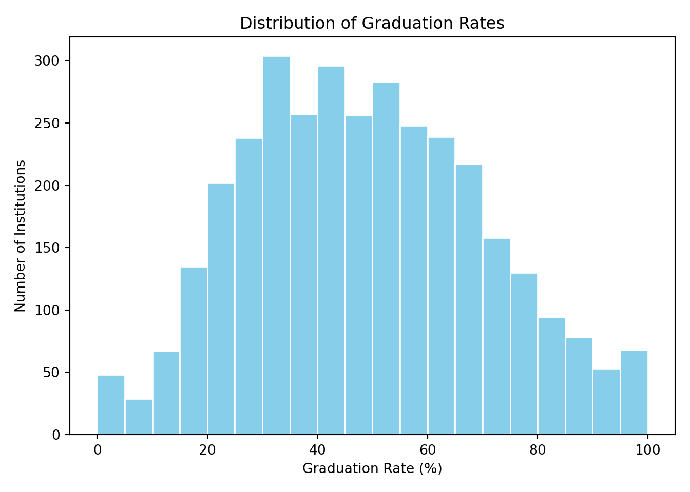
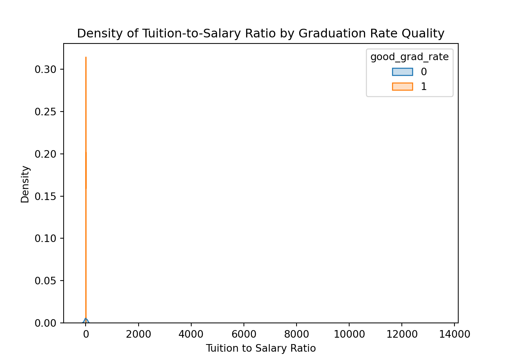
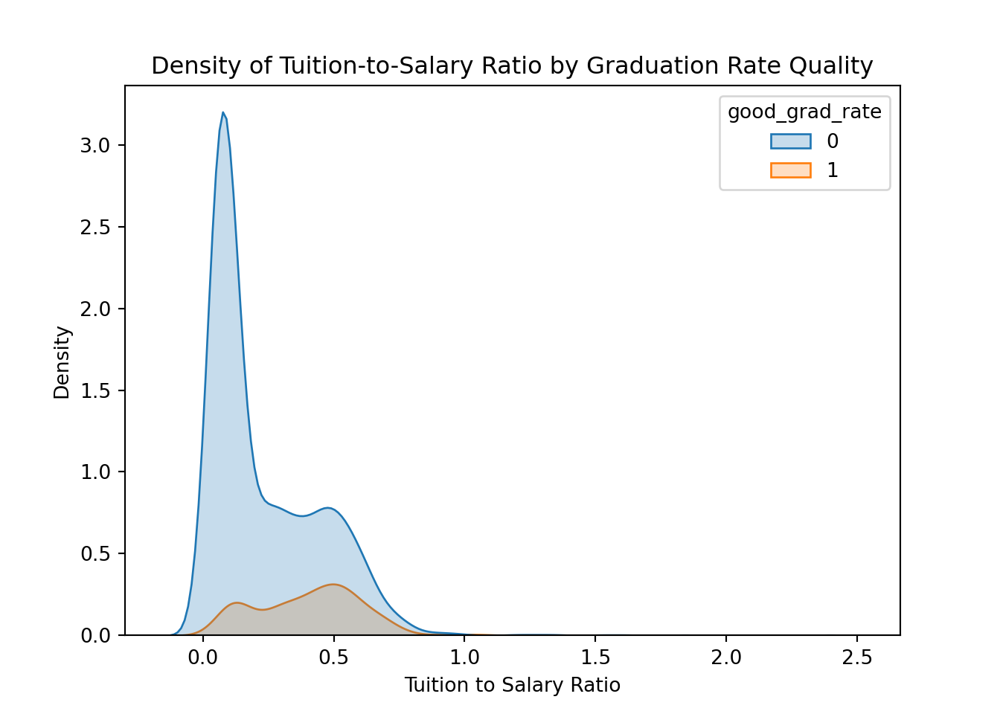

import matplotlib.pyplot as plt
import pandas as pd
import numpy as np
import seaborn as snsPredicting Institutional Graduation Rates Using Testing and Training Data
Case Study
1. PREPARE
We’ll focus on the core parts of doing a machine learning analysis in Python, this time bringing into the picture the key concept of training and testing data, which we deliberately omitted from the last case study. We’ll use the {scikit-learn} library (add-ons) to do so, like in the first module. However, to help anchor our analysis and provide us with some direction, we’ll focus on the following research question as we explore this new approach:
How well can we predict which institutions have higher graduation rates?
This builds directly on the work from Module 1, where we started investigating this question. In this module, we’ll properly implement a training and testing workflow to evaluate our predictions more rigorously. We’ll also investigate our data set further to ensure that we understand what goes into the model!
Reading: Statistical modeling: The two cultures
Breiman, L. (2001). Statistical modeling: The two cultures (with comments and a rejoinder by the author). Statistical Science, 16(3), 199-231. https://projecteuclid.org/journals/statistical-science/volume-16/issue-3/Statistical-Modeling--The-Two-Cultures-with-comments-and-a/10.1214/ss/1009213726.pdf
👉 Your Turn ⤵
You’ll be asked to reflect more deeply on this article later on (in the badge activity); but for now, open up the article and take a quick scan of the article and note below an observation or question you have about the article.
- YOUR RESPONSE HERE
Reading: Predicting students’ final grades
Estrellado, R. A., Freer, E. A., Mostipak, J., Rosenberg, J. M., & Velásquez, I. C. (2020). Data science in education using R. Routledge (c14), Predicting students’ final grades using machine learning methods with online course data. http://www.datascienceineducation.com/
Please review this chapter, focusing on the overall goals of the analysis and how the analysis was presented (focusing on predictions, rather than the ways we may typically interpret a statistical model–like measures of statistical significance).
1b. Load Packages
Like in the last module, please load the pandas data wrangling library, the numpy numerical library and matplotlib for basic plotting. We will also import seaborn (a more feature-rich data visualization tool) which will be introduced later in the case study.
We will also load a few scikit-learn tools to use later in this case study:
# The same model from module-1
from sklearn.linear_model import LogisticRegression
# New scikit-learn tools we'll explore in this case study
from sklearn.pipeline import Pipeline
from sklearn.model_selection import train_test_split
from sklearn.impute import SimpleImputer
from sklearn.metrics import accuracy_score2. WRANGLE
In general, data wrangling involves some combination of cleaning, reshaping, transforming, and merging data (Wickham & Grolemund, 2017). The importance of data wrangling is difficult to overstate, as it involves the initial steps of going from raw data to a dataset that can be explored and modeled (Krumm et al, 2018).
2a. Import and Inspect Data
For this module, we’ll be working with the same IPEDS (Integrated Postsecondary Education Data System) dataset we used in Module 1. Let’s read it in:
ipeds_df = pd.read_csv("data/ipeds-all-title-9-2022-data.csv")We’ll use the same data cleaning steps from Module 1:
column_map = {
'institution name': 'name',
'HD2022.Postsecondary and Title IV institution indicator': 'title_iv', # is the university a title IV university?
'HD2022.Carnegie Classification 2021: Basic': 'carnegie_class', # which carnegie classification
'HD2022.State abbreviation': 'state', # state
'DRVEF2022.Total enrollment': 'total_enroll', # total enrollment
'DRVADM2022.Percent admitted - total': 'pct_admitted', # percentage of applicants admitted
"DRVC2022.Bachelor's degree": 'n_bach', # number of students receiving a bachelor's degree
"DRVC2022.Master's degree": 'n_mast', # number of students receiving a master's degree
"DRVC2022.Doctor's degree - research/scholarship": 'n_doc', # number receive a doctoral degree
'DRVIC2022.Tuition and fees, 2021-22': 'tuition_fees', # total cost of tuition and fees
'DRVGR2022.Graduation rate, total cohort': 'grad_rate', # graduation rate
'SFA2122.Percent of full-time first-time undergraduates awarded any financial aid': 'percent_fin_aid', # percent of students receive financial aid
'DRVHR2022.Average salary equated to 9 months of full-time instructional staff - all ranks': 'avg_salary' # average salary of instructional staff
}
ipeds_df = ipeds_df.rename(columns=column_map) # first map column names ...
ipeds_df = ipeds_df[column_map.values()] # then select the columns it mapped.👉 Your Turn ⤵
Just as we did in Module 1, let’s filter the data to include only Title IV postsecondary institutions.
ipeds_df = ipeds_df.query('title_iv == "Title IV postsecondary institution"') # filter to Title IV👉 Your Turn ⤵
Now, filter the data again to only include institutions with a carnegie classification. Specifically, exclude those institutions with a value for the carnegie_class variable that is “Not applicable, not in Carnegie universe (not accredited or nondegree-granting)”. As a hint: whereas the logical operator == is used to include only matching conditions, the logical operator != excludes matching conditions.
ipeds_df = ipeds_df.query('carnegie_class != "Not applicable, not in Carnegie universe (not accredited or nondegree-granting)"')👉 Your Turn ⤵
Let’s inspect our data - using .head() or another means of your choosing below.
ipeds_df.head() name ... avg_salary
0 Alabama A & M University ... 77824.0
1 University of Alabama at Birmingham ... 106434.0
2 Amridge University ... 36637.0
3 University of Alabama in Huntsville ... 92561.0
4 Alabama State University ... 72635.0
[5 rows x 13 columns]Write down a few observations after inspecting the data:
- YOUR RESPONSE HERE
- YOUR RESPONSE HERE
- YOUR RESPONSE HERE
2b. Transform Variables
We’ll now transform our graduation rate variable into a binary outcome for our classification task, just as we did in Module 1.
👉 Your Turn ⤵
Create a binary variable called good_grad_rate that indicates whether an institution has a graduation rate above a certain threshold. Choose a threshold that seems reasonable to you.
ipeds_df['good_grad_rate'] = np.where(ipeds_df['grad_rate'] > 70, 1, 0)Here, add a reason or two for how and why you picked the threshold you did:
- YOUR RESPONSE HERE
- YOUR RESPONSE HERE
3. EXPLORE
As noted by Krumm et al. (2018), exploratory data analysis often involves some combination of data visualization and feature engineering. In Part 3, we will create a quick visualization to help us spot any potential issues with our data and engineer new predictive variables or “features” that we will use in our predictive models.
3a. Examine Variables
Let’s take a closer look at our institutional data. In the chunk below, count the number of institutions with good and poor graduation rates.
ipeds_df['good_grad_rate'].value_counts()good_grad_rate
0 3267
1 551
Name: count, dtype: int64What does this tell us?
We can see how many institutions have good and not-so-good graduations rates – and what percentage of the data is missing.
Next, let’s visualize the distribution of graduation rates to better understand our data:
plt.hist(ipeds_df['grad_rate'], bins=range(0, 105, 5), color='skyblue', edgecolor='white')
plt.title("Distribution of Graduation Rates")
plt.xlabel("Graduation Rate (%)")
plt.ylabel("Number of Institutions")
plt.tight_layout()
plt.show()
👉 Your Turn ⤵
Create another visualization that explores the relationship between two variables in our dataset. For example, you might want to look at the relationship between tuition fees and graduation rates, or enrollment and graduation rates.
# Add your visualization code hereOne last, critical step is understanding missingness in our data. The isnull() method is fantastic for this — when combined with the sum() method it tells us the number of missing values for each variable in our data set.
ipeds_df.isnull().sum()name 0
title_iv 0
carnegie_class 0
state 0
total_enroll 0
pct_admitted 2040
n_bach 1192
n_mast 1195
n_doc 1195
tuition_fees 599
grad_rate 418
percent_fin_aid 405
avg_salary 113
good_grad_rate 0
dtype: int64From this, we can see that several variables have considerable missingness. For example, the pct_admitted variable has more than half of its values missing! There are ways to deal with this (real-life datasets, including the IPEDS data, are rife with missing values for a whole host of reasons). We will address those (e.g., imputation) later.
For this analysis, though, we’ll focus on the variables that have relatively few missing values - tuition_fees, percent_fin_aid, avg_salary, and our dependent variable, good_grad_rate. This will be a simple model — simpler in terms of the features than the model in the first analysis, but with the knowledge that we are using variables that are more complete.
3b. Feature Engineering
As defined by Krumm, Means, and Bienkowski (2018) in Learning Analytics Goes to School:
Feature engineering is the process of creating new variables within a dataset, which goes above and beyond the work of recoding and rescaling variables.
The authors note that feature engineering draws on substantive knowledge from theory or practice, experience with a particular data system, and general experience in data-intensive research. Moreover, these features can be used not only in machine learning models, but also in visualizations and tables comprising descriptive statistics.
Though not as often discussed as other steps, feature engineering is an important step. You can read more about feature engineering here.
For this module, we’ll create a new feature that might help predict graduation rates. Let’s create a derived variable representing the ratio of tuition and fees to average salary, which could indicate the institution’s value proposition.
ipeds_df['tuition_to_salary_ratio'] = ipeds_df['tuition_fees'] / ipeds_df['avg_salary']Let’s examine this new feature:
sns.kdeplot( # builds a density plot
data=ipeds_df,
x='tuition_to_salary_ratio',
hue='good_grad_rate',
fill=True,
)
plt.title("Density of Tuition-to-Salary Ratio by Graduation Rate Quality")
plt.xlabel("Tuition to Salary Ratio")
plt.ylabel("Density")
plt.show()
Something is very not right. It seems like there may be some number that is way off – and that’s skewing the plot in a weird way.
What’s going on? In this case, it can be helpful to get eyes on the data to see if anything funny seems to be going on. Let’s take a look at the relevant variables:
columns_to_inspect = ['name', 'tuition_fees', 'avg_salary', 'tuition_to_salary_ratio']
ipeds_df[columns_to_inspect].sort_values(by='tuition_to_salary_ratio', ascending=False) name ... tuition_to_salary_ratio
3697 Beckfield College-Florence ... 13295.000000
5778 Young Americans College of the Performing Arts ... 2.396652
5616 Los Angeles Academy of Figurative Art ... 1.840932
4581 Aviator College of Aeronautical Science and Te... ... 1.614223
4438 Williamson Christian College ... 1.525556
... ... ... ...
5814 Glasgow Caledonian New York College ... NaN
5817 Christ Mission College ... NaN
5826 North-West College-San Diego ... NaN
5832 WellSpring School of Allied Health-Wichita ... NaN
5884 California University of Science and Medicine ... NaN
[3818 rows x 4 columns]Do you spot the problem? Add a note below about what it might be:
- YOUR RESPONSE HERE
As you likely noticed, it looks like one institution - Beckfield College-Florence - has an average salary of $1 for their graduates. As a result, the ratio of tuition and fees relative to salary is huge – far larger than for any other institutions! What to do here? This seems almost certain to be an error in data reporting or recording. We can safely filter out this one row with some simple logic.
ipeds_df = ipeds_df.query("avg_salary > 1")Let’s try to create that plot again:
sns.kdeplot( # builds a density plot
data=ipeds_df,
x='tuition_to_salary_ratio',
hue='good_grad_rate',
fill=True,
)
plt.title("Density of Tuition-to-Salary Ratio by Graduation Rate Quality")
plt.xlabel("Tuition to Salary Ratio")
plt.ylabel("Density")
plt.show()
That’s better! Add a note on what this graph might mean below:
- YOUR RESPONSE HERE
We’re now ready to proceed to the five machine learning (modeling) steps!
4. MODEL
In this step, we will dive into the SML modeling process in much more depth than in the last module.
Split Data into a training and test set that will be used to develop a predictive model;
Create a “Pipeline” for our predictive model and learn how to streamline data processing steps;
Fit Models to our training set using logistic regression;
Interpret Accuracy of our model to see how well our model can “predict” our outcome of interest.
Step 1. Split data
We didn’t split the data we used in the first module. Instead, we used data to train our model, and then we used the same data set to evaluate how good our model performed, i.e., to test our model. This raises an issue: using the same data to train and test our model can lead to something called overfitting, which is when a model learns the specifics in the training data rather than the underlying pattern.
This is related to the bias-variance trade off introduced in the conceptual overview: by using the same data to train and test our model, we run the risk of developing a model with low bias, but high variance. Any changes in the training data could result in a very different model (with far higher bias), which is not ideal. In other words, we want to develop a model that is generalizable to new data, not just the data we used to train it.
The authors of Data Science in Education Using R (Estrellado et al., 2020) remind us that:
At its core, machine learning is the process of “showing” your statistical model only some of the data at once and training the model to predict accurately on that training dataset (this is the “learning” part of machine learning). Then, the model as developed on the training data is shown new data - data you had all along, but hid from your computer initially - and you see how well the model that you developed on the training data performs on this new testing data. Eventually, you might use the model on entirely new data.
Training and Testing Sets
It is therefore common when beginning a modeling project to separate the data set into two partitions:
The training set is used to estimate, develop and compare models; feature engineering techniques; tune models, etc.
The test set is held in reserve until the end of the project, at which point there should only be one or two models under serious consideration. It is used as an unbiased source for measuring final model performance.
There are different ways to create these partitions of the data and there is no uniform guideline for determining how much data should be set aside for testing. The proportion of data can be driven by many factors, including the size of the original pool of samples and the total number of predictors.
After you decide how much to set aside, the most common approach for actually partitioning your data is to use a random sample. For our purposes, we’ll use random sampling to select 20% for the test set and use the remainder for the training set, which are the defaults for the {rsample} package.
Split Data Sets
To split our data, we will be using the train_test_split() scikit-learn function.
Run the following code to split the data:
from sklearn.model_selection import train_test_split
train_df, test_df = train_test_split(ipeds_df, test_size=0.2, random_state=20250712) # splitting the data and sedding a random state so this is reproducibleNote: Since random sampling uses random numbers, it is important to set the random_state parameter as the same value. This ensures that the random numbers can be reproduced at a later time (if needed). We pick the first date on which we may carry out this learning lab as the seed, but any number will work!
👉 Your Turn ⤵
Go ahead and use the len() to check that the training data set indeed has 80% of the number of observations as in the larger data. Do that in the chunk below:
len(train_df) / len(ipeds_df) # should = ~0.80.7999460043196545Step 2: Create a “Pipeline”
In this section, we introduce another scikit-learn tool called a Pipeline, which is designed to help you to take raw data through preprocessing steps and a model all in one cohesive method. Some examples of Pipeline steps:
Turning categorical variables into multiple binary columns (i.e., “one-hot encoding”).
Scaling numerical values (min-max scaling or standard scaling).
Imputing missing values with a mean or median, or using a model to estimate missing values.
Training a LinearRegression model.
We’ll dive more into the above steps in later modules, focusing now on just dealing with missing values (Imputation) and building a model.
Prepare the data
To get started, let’s split both the train and test datasets between the independent columns (i.e. “features”) and dependent column (i.e. “target” or “outcome”):
dependent_col = 'good_grad_rate' # what we're predicting
independent_cols = [ # what we're using to predict
'tuition_fees',
'avg_salary',
'tuition_to_salary_ratio',
'percent_fin_aid'
]
X_train = train_df[independent_cols]
y_train = train_df[dependent_col]
X_test = test_df[independent_cols]
y_test = test_df[dependent_col]Since we’re predicting a binary outcome (good_grad_rate), we will use the scikit-learn LinearRegression model. To deal with the blank values (i.e. nulls) that would break the model, we use the scikit-learn SimpleImputer. This fills blank values with a variety of strategies one can specify. In this example we will use “median” which fills blanks with the median value for that column:
Run the following code to finish specifying our model:
pipeline = Pipeline(
steps=[
('impute', SimpleImputer(strategy='median')),
('model', LogisticRegression()),
]
)Step 3: Fit model
Running pipeline.fit() allows all steps of the pipeline to learn from the training data – the median to fill for each numerical column, and the model weights in the regression. Now when making new predictions we can simply use the predict() method.
pipeline.fit(X=X_train, y=y_train)Pipeline(steps=[('impute', SimpleImputer(strategy='median')),
('model', LogisticRegression())])In a Jupyter environment, please rerun this cell to show the HTML representation or trust the notebook. On GitHub, the HTML representation is unable to render, please try loading this page with nbviewer.org.
Parameters
| steps | [('impute', ...), ('model', ...)] | |
| transform_input | None | |
| memory | None | |
| verbose | False |
Parameters
| missing_values | nan | |
| strategy | 'median' | |
| fill_value | None | |
| copy | True | |
| add_indicator | False | |
| keep_empty_features | False |
Parameters
| penalty | 'l2' | |
| dual | False | |
| tol | 0.0001 | |
| C | 1.0 | |
| fit_intercept | True | |
| intercept_scaling | 1 | |
| class_weight | None | |
| random_state | None | |
| solver | 'lbfgs' | |
| max_iter | 100 | |
| multi_class | 'deprecated' | |
| verbose | 0 | |
| warm_start | False | |
| n_jobs | None | |
| l1_ratio | None |
👉 Your Turn ⤵
Let’s inspect our pipeline by typing its instance name (the name of the Pipeline object) below; this is the final, fitted model—one that can be interpreted further in the next step!
pipelinePipeline(steps=[('impute', SimpleImputer(strategy='median')),
('model', LogisticRegression())])In a Jupyter environment, please rerun this cell to show the HTML representation or trust the notebook. On GitHub, the HTML representation is unable to render, please try loading this page with nbviewer.org.
Parameters
| steps | [('impute', ...), ('model', ...)] | |
| transform_input | None | |
| memory | None | |
| verbose | False |
Parameters
| missing_values | nan | |
| strategy | 'median' | |
| fill_value | None | |
| copy | True | |
| add_indicator | False | |
| keep_empty_features | False |
Parameters
| penalty | 'l2' | |
| dual | False | |
| tol | 0.0001 | |
| C | 1.0 | |
| fit_intercept | True | |
| intercept_scaling | 1 | |
| class_weight | None | |
| random_state | None | |
| solver | 'lbfgs' | |
| max_iter | 100 | |
| multi_class | 'deprecated' | |
| verbose | 0 | |
| warm_start | False | |
| n_jobs | None | |
| l1_ratio | None |
Step 4: Interpret accuracy
To interpret the model’s accuracy we start by making a prediction on the test dataset, then calculating the number of times the prediction and actual outcome value is the same:
y_preds = pipeline.predict(X_test)
correct = y_preds == y_test
accuracy = sum(correct) / len(y_test)
print('accuracy:', accuracy)accuracy: 0.8893387314439946👉 Your Turn ⤵
A short-cut to the above is to simply use the scikit-learn accuracy_score() function (which we already imported above), taking y_preds as the first argument and y_test as the second; we’ll use this short-cut from here forward, having seen how accuracy is calculated. Write that code below.
accuracy_score(y_preds, y_test)0.8893387314439946Let’s step back a bit. How well could we do if we include more data? And how useful could such a model be in the real world? We’ll dive into these questions more over the forthcoming modules.
That’s it for now; the core parts of machine learning are used in the above steps you took; what we’ll do after this leaning lab only adds nuance and complexity to what we’ve already done.
5. COMMUNICATE
For your SML Module 2 Badge, you will have an opportunity to create a simple “data product” designed to illustrate insights some insights gained from your model and ideally highlight an “action step” that can be taken to act upon your findings.
Rendered HTML files can be published online through a variety of ways including Posit Cloud, RPubs , GitHub Pages, Quarto Pub, or other methods. The easiest way to quickly publish your file online is to publish directly from RStudio. You can do so by clicking the “Publish” button located in the Viewer Pane after you render your document as illustrated in the screenshot below.

Congratulations - you’ve completed the second supervised machine learning case study!